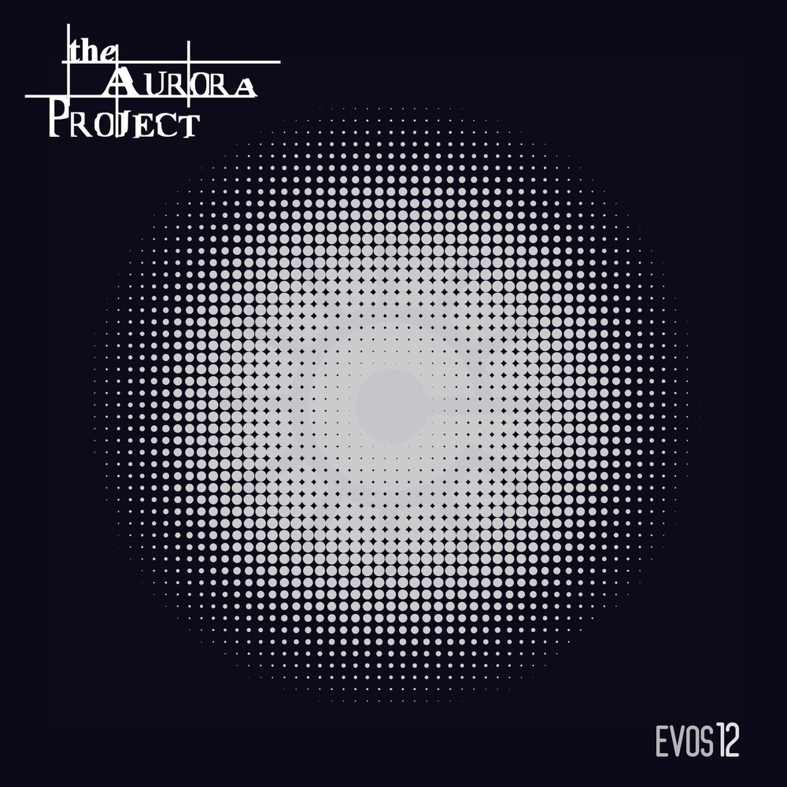
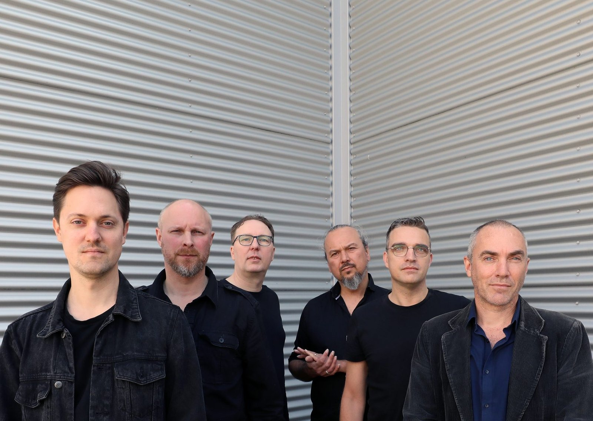

Part 1 of 2 — Released 21.02.2025
After the Dronewars, humanity gathered in massive cities — and lost its sense of purpose. The new world's leaders seized control. Nigel Light struggled to survive in the ruins of a city that once valued dreams, freedom and equality. Far away, on the moon Welda, a young genius made a discovery with the potential to save his world. If only Earth could learn from Welda…
Cpunt, Hoofddorp (NL) — w/ Persefone, Ihlo and more
A fictional podcast — the story continues between the albums
"I am trying to survive in this environment. My name is Nigel, my friends call me Nigel Light. I live in the remains of a city where once you could live your dreams, and where freedom and equality were highly valued. But that time is long gone. I am living an average life, trying not to stand out of the crowd too much… but I have the feeling that this is about to change…"

Dutch progressive rock from Katwijk, formed in 1998. Expansive concept albums built from intensive jam sessions — shaped by Rush, Pink Floyd and The Gathering. Played ProgPower Europe; shared stages with Riverside and Threshold. Photo: Bert Treep.